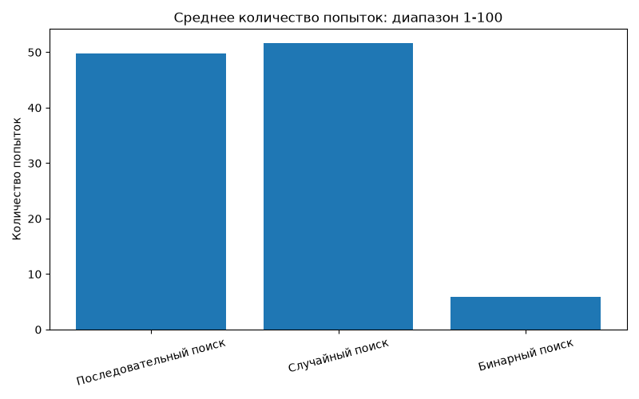
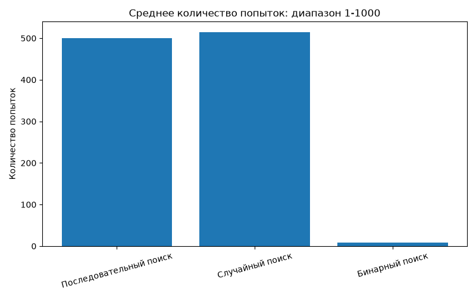
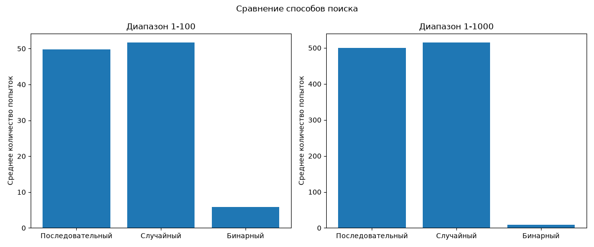

По порядку
Проверяем числа одно за другим, начиная с первого. Просто, но иногда долго.
1 → 2 → 3 → 4 → …
ИССЛЕДОВАТЕЛЬСКИЙ ПРОЕКТ
Три способа поиска. Один секретный номер. Проверим, какой алгоритм справится быстрее!
Попробовать игру ↓01 / ЧЕЛОВЕК ПРОТИВ КОМПЬЮТЕРА
Одно загаданное число — две стратегии поиска. Сначала попробуй сам, затем посмотрим на алгоритм компьютера!
ИГРОК 1
Угадай число от 1 до 100.
Жду твою догадку…
Попыток: 0
ИГРОК 2
Он использует бинарный поиск — каждый раз делит диапазон пополам.
Попыток: —
02 / ТРИ СТРАТЕГИИ
Проверяем числа одно за другим, начиная с первого. Просто, но иногда долго.
Выбираем случайное число, которое ещё не проверяли. Повезёт — найдём быстро!
Проверяем середину диапазона и каждый раз отбрасываем половину неподходящих чисел.
03 / РЕЗУЛЬТАТЫ
Я провел по 1000 испытаний для каждого метода в каждом диапазоне.



04 / ВЫВОД
В моем эксперименте бинарный поиск потребовал намного меньше попыток, чем последовательный и случайный. Чем больше диапазон, тем заметнее разница.
Результаты случайных испытаний могут немного меняться при каждом запуске.